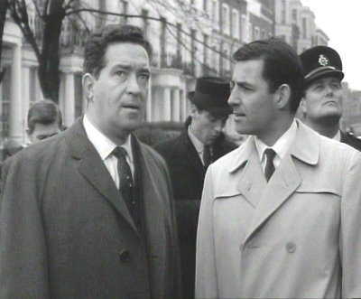
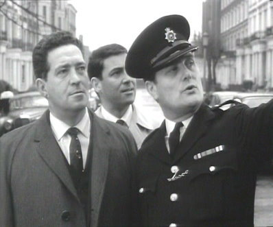
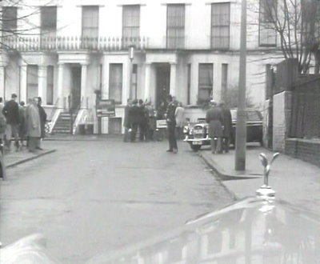
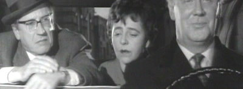
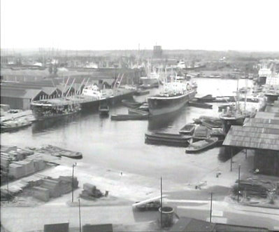

|
|
HELP FIND THE FOLLOWING LOCATIONS
PAGE 27
GIDEON’S
WAY: How to
Retire Without Really Working (George Pollock: November/December 1964)
Belgrave Gardens NW8– Driving away from the crime scene the Greshams
run into a police diversion. The police
have cordoned off a street where an armed robber, Shorty
Flemming is hold up.
Gideon (John Gregson) and Keen (Alexander Davion) arrive on the scene
to take charge of
the situation. Gideon recognises Robert Gresham and comments to Keen
about the
Rolls. Gideon’s intervention is cover in that night’s television news.
(Identified by Alan Field, May 2009)






Unknown 9 – Mr. Pater drives the Greshams to the docks and gives them their passports.


 Could be warehouses by the
docks or by
King’s Cross.
Could be warehouses by the
docks or by
King’s Cross.
Surrey Docks, SE16 (redeveloped as Surrey Quays shopping centre) – The Greshams find their way to meet their contact in Docklands

Whitehall Court/Charring Cross, SW1– Later that night the Greshams arrive at the docks and realize that they have been duped.

Think you know a spot? Need a bigger image? Email me.
< Previous | Index | Avengerland | Next >
Copyright © 2024 Anthony R. McKay